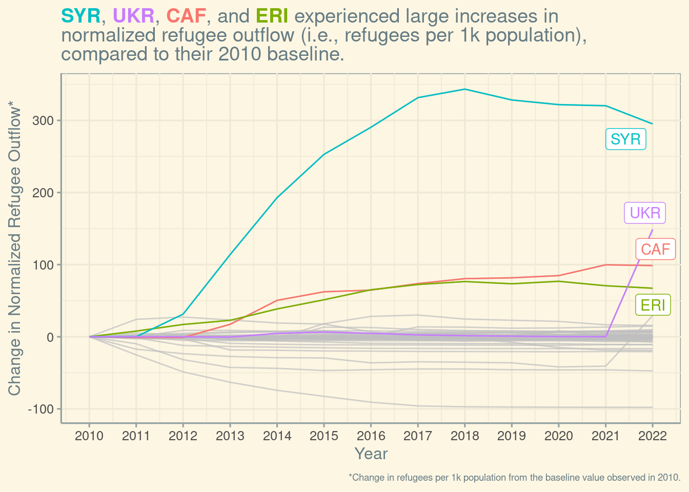

For this post, I’ll be using the Week 34 Tidy Tuesday dataset, which contains data on refugee movement around the world. I want to look at the change in refugee outflows over time in different nations, and see if I can identify countries with meaningfully large increases in refugee outflows.
Data cleaning
First, some data cleaning.
To keep things simple, I’m only going to keep nations that had refugee data for all of the 13 years spanning 2010-2022.
Normalization
Next, to make comparisons between nations more apples-apples, I’m going to do some normalization.
I want to normalize in terms of population size and change over baseline.
First, I’ll fetch population data from World Bank using wbstats.
# A tibble: 1 × 3
indicator_id indicator indicator_desc
<chr> <chr> <chr>
1 SP.POP.TOTL Population, total Total population is based on the de facto defi…pops <- wb_data("SP.POP.TOTL", start_date = 2010, end_date = 2022) %>%
select(iso3c, date, "SP.POP.TOTL") %>%
rename(pop = "SP.POP.TOTL",
iso = iso3c)
df_clean %>%
left_join(pops, by=c('coo_iso'='iso', 'year'='date')) -> df_enriched
df_enriched %>%
head()# A tibble: 6 × 5
coo_name coo_iso year refugees pop
<chr> <chr> <dbl> <dbl> <dbl>
1 Afghanistan AFG 2010 0 28189672
2 Iran (Islamic Rep. of) IRN 2010 30 75373855
3 Iraq IRQ 2010 6 31264875
4 Pakistan PAK 2010 6398 194454498
5 Egypt EGY 2010 5 87252413
6 China CHN 2010 6 1337705000Next, I’ll compute a new variable: refugees_per_1k_pop that represents refugees leaving per 1000 persons in the original population. This is a good way to normalize, because we’d expect a larger count of refugees leaving from countries that had more people to begin with.
df_enriched %>%
group_by(year, coo_name, coo_iso) %>%
summarize(refugees = sum(refugees),
pop = first(pop)) %>%
mutate(refugees_per_1k_pop = refugees/(pop/1000)) -> df_enriched
df_enriched %>%
head()# A tibble: 6 × 6
# Groups: year, coo_name [6]
year coo_name coo_iso refugees pop refugees_per_1k_pop
<dbl> <chr> <chr> <dbl> <dbl> <dbl>
1 2010 Afghanistan AFG 3054699 28189672 108.
2 2010 Albania ALB 14771 2913021 5.07
3 2010 Algeria DZA 6665 35856344 0.186
4 2010 Angola AGO 134851 23364185 5.77
5 2010 Antigua and Barbuda ATG 28 85695 0.327
6 2010 Argentina ARG 553 40788453 0.0136I’ll do a bit of cleaning again, to remove those nations for whom I didn’t have a complete record of population data, and so couldn’t calculate refugees_per_1k_pop for every year.
Next, I’ll use 2010 as a baseline year, and subtract each year’s value from that. This will allow me to measure change over time from this common baseline, and compare nations in terms of a normalized change.
df_enriched_clean %>%
filter(year == 2010) %>%
group_by(coo_name) %>%
summarize(baseline_refugees_per_1k_pop = sum(refugees)/(first(pop)/1000)) -> baseline_year
df_enriched_clean %>%
left_join(baseline_year, by='coo_name') %>%
mutate(change_from_baseline = refugees_per_1k_pop - baseline_refugees_per_1k_pop) -> df_enriched_clean
df_enriched_clean %>%
head()# A tibble: 6 × 8
# Groups: year, coo_name [6]
year coo_name coo_iso refugees pop refugees_per_1k_pop
<dbl> <chr> <chr> <dbl> <dbl> <dbl>
1 2010 Afghanistan AFG 3054699 28189672 108.
2 2010 Albania ALB 14771 2913021 5.07
3 2010 Algeria DZA 6665 35856344 0.186
4 2010 Angola AGO 134851 23364185 5.77
5 2010 Antigua and Barbuda ATG 28 85695 0.327
6 2010 Argentina ARG 553 40788453 0.0136
# ℹ 2 more variables: baseline_refugees_per_1k_pop <dbl>,
# change_from_baseline <dbl>Identifying regions of interest
Next, I want to identify a smaller set of “interesting” COOs that have experienced large increases over the baseline. I’ll identify an upper bound percentile of max change over baseline, and then I’ll use a value that approximates that as a filter. This gives me 4 “interesting” nations.
df_enriched_clean %>%
group_by(coo_name) %>%
summarize(max_change_from_baseline = max(change_from_baseline)) %>%
summarize(p90_change = quantile(max_change_from_baseline, .975, na.rm=T))# A tibble: 1 × 1
p90_change
<dbl>
1 30.0df_enriched_clean %>%
group_by(coo_name, coo_iso) %>%
summarize(max_change_from_baseline = max(change_from_baseline),
last_value = last(change_from_baseline, order_by=year)) %>%
filter(max_change_from_baseline > 32) -> coos_with_large_changes_over_baseline`summarise()` has grouped output by 'coo_name'. You can override using the
`.groups` argument.coos_with_large_changes_over_baseline# A tibble: 4 × 4
# Groups: coo_name [4]
coo_name coo_iso max_change_from_baseline last_value
<chr> <chr> <dbl> <dbl>
1 Central African Rep. CAF 99.8 98.7
2 Eritrea ERI 76.9 67.3
3 Syrian Arab Rep. SYR 343. 295.
4 Ukraine UKR 149. 149. Data visualization
Finally, I’ll plot change over the 2010 baseline (in refugees per 1k population), and highlight the 4 interesting nations identified above.
I’ll use this to help me pick colors for the ggtitle text.

df_enriched_clean %>%
mutate(class = coo_name %in% coos_with_large_changes_over_baseline$coo_name,
year = as.Date(paste0(as.character(year), '-01-01'))) %>%
arrange(year, desc(class)) %>%
mutate(coo_iso = fct_inorder(coo_iso)) %>%
ggplot(aes(x=year, y=change_from_baseline, color=coo_iso)) +
geom_line() +
scale_x_date(date_labels="%Y", date_breaks="1 year") +
ggthemes::theme_solarized() +
gghighlight::gghighlight(class == TRUE) +
ggtitle("<strong><span style='color:#00BFC4'>SYR</span></strong>, <strong><span style='color:#C77CFF'>UKR</span></strong>, <strong><span style='color:#F8766D'>CAF</span></strong>, and <strong><span style='color:#7CAE00'>ERI</span></strong> experienced large increases in<br>normalized refugee outflow (i.e., refugees per 1k population),<br> compared to their 2010 baseline.") +
xlab('Year') +
ylab('Change in Normalized Refugee Outflow*') +
labs(caption = "<span style='font-size:7pt'>*Change in refugees per 1k population from the baseline value observed in 2010.</span>") +
theme(plot.title = ggtext::element_markdown(),
plot.caption = ggtext::element_markdown()) -> plotWarning: Tried to calculate with group_by(), but the calculation failed.
Falling back to ungrouped filter operation...plot